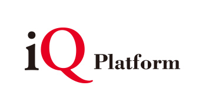
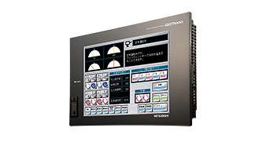
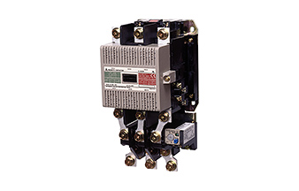
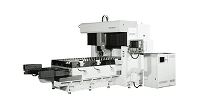
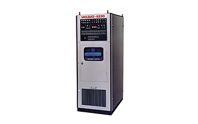

FA's Contribution to the history of Mitsubishi ElectricFA contribution History About Us

FA: Consistently changing for the better
Mitsubishi Electric celebrated its 100th anniversary in February 2021. The Factory Automation business has been a substantial part of that success story for almost as long. Here are just a few factory automation highlights from over the past years:
2010s
- 2019
- Released the GX-F two-dimensional fiber laser processing machine.
- 2018
-
Developed FA devices that are compatible with the CC-Link IE TSN industrial open network ahead of the world.
- 2016
- Released the GTW5 Series of laser PCB drilling machines that deliver high productivity and drilling position precision.
- 2016
-
Launched iQ Care Remote4U, a service for assisting the remote inspection of machine tools.
- 2012
- Released the M5CM Series of smart meters that can read the exergy meter and be powered on/off by remote operation.
- 2011
- Established Mitsubishi Electric Automation Manufacturing (Changshu) as a manufacturing company for industrial drive controllers in Changshu, China, to strengthen the framework for product supplies in the Chinese market.
2000s
- 2007
-
Proposed iQ Platform as a new concept for strengthening the linkage of FA devices in production sites, and released compatible controllers and network products.

- 2004
-
Released the GOT1000 Series of programmable HMIs that provide high-speed responsivity, operability and connectivity.

- 2000
- Established Han Neung Techno as a sales and servicing company for FA products, to strengthen the FA business and enhance customer service in South Korea.
1990s
- 1997
- Released the MDU breaker, the industry's first breaker for wiring devices that incorporates a circuit measuring and monitoring function.
- 1996
-
Developed the CC-Link FA field network that realizes connections with intelligent devices and the industry's fastest responsivity.
- 1994
- Established Mitsubishi Electric Dalian Industrial Products as a manufacturing and sales base for circuit breakers for wiring devices in China.
- 1994
- Released the MS-N Series of new electromagnetic switches having a CAN terminal for simple wiring and structural safety.
1980s
- 1986
- Released the M300 Series NC unit that employs a 32-bit microprocessor for the first time in the world.
- 1982
-
Released the world's first electromagnetic switch (model MS-K) employing an "AC input DC excited" electromagnet.

- 1981
- Released the ML-1000P SD-type CO2 laser processing machine that realizes high-speed response control and high-frequency pulse output.
- 1980
-
Developed and announced a 3kW CO2 laser processing machine that delivers enhanced laser beam condensation and stability, high efficiency and high output.

1920s-1970s
- 1968
- Established a distributor system following the agency system for industrial equipment in 1962, to further strengthen the support framework.
- 1964
-
Developed and announced a built-in NC unit for computers in 1964 after exhibiting it for the first time at an international machine tool fair in 1960.

- 1962
- Established an agency system for industrial equipment and built a detailed support framework.
- 1928
- Acquired type approval for a watt-hour meter in 1928, and began its production at Nagoya Works in 1930. Production was transferred to Fukuyama Works in 1946.
- 1926
- Developed and produced a three-phase squirrel-cage motor (model MK) based on Westinghouse technology.
- 1924
-
Completed the construction of a factory that was begun from landfill work in the previous year and established Nagoya Works. Began the production of general-purpose motors.